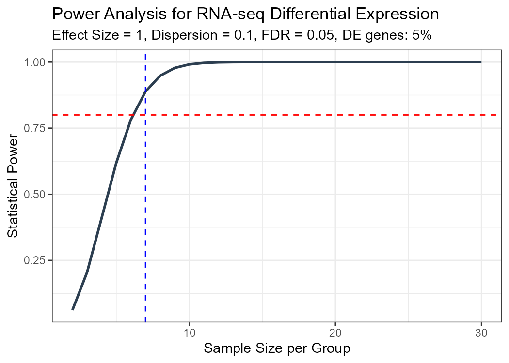
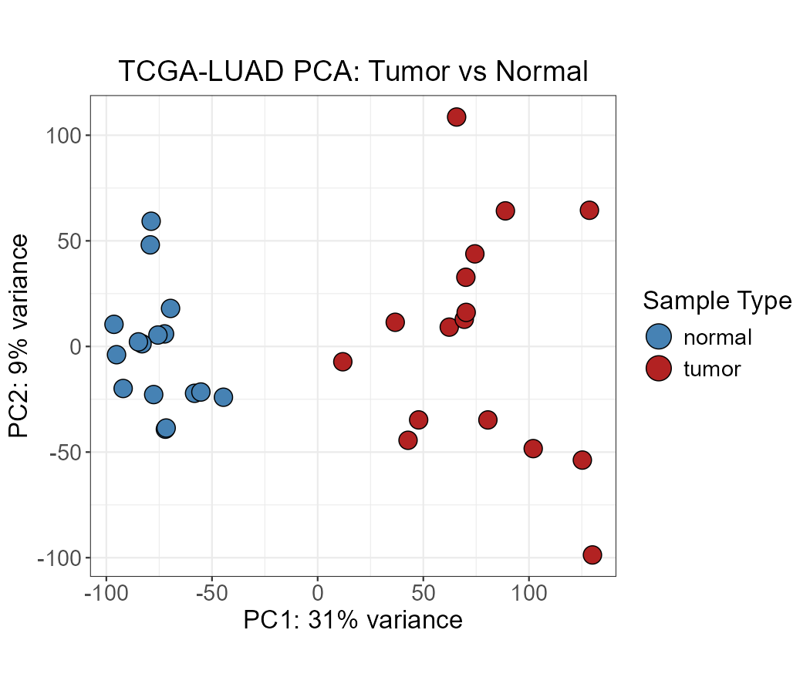
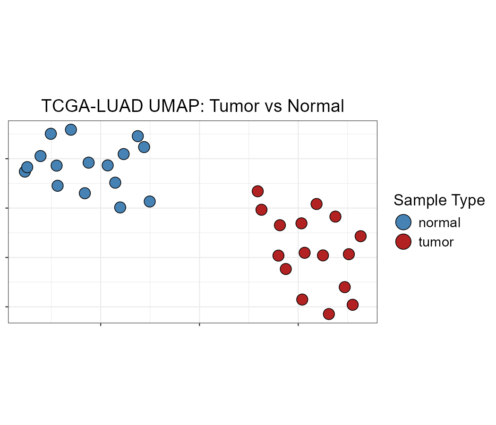
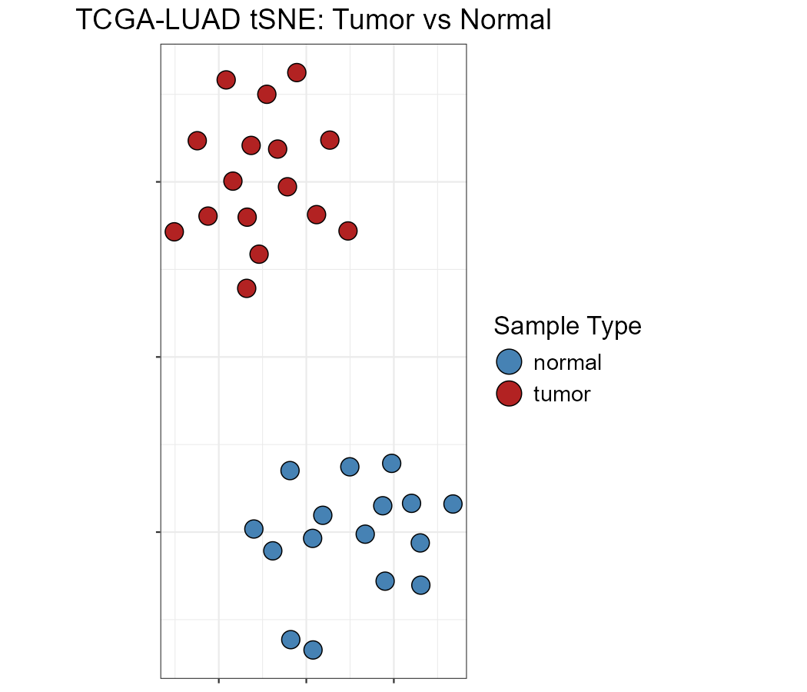
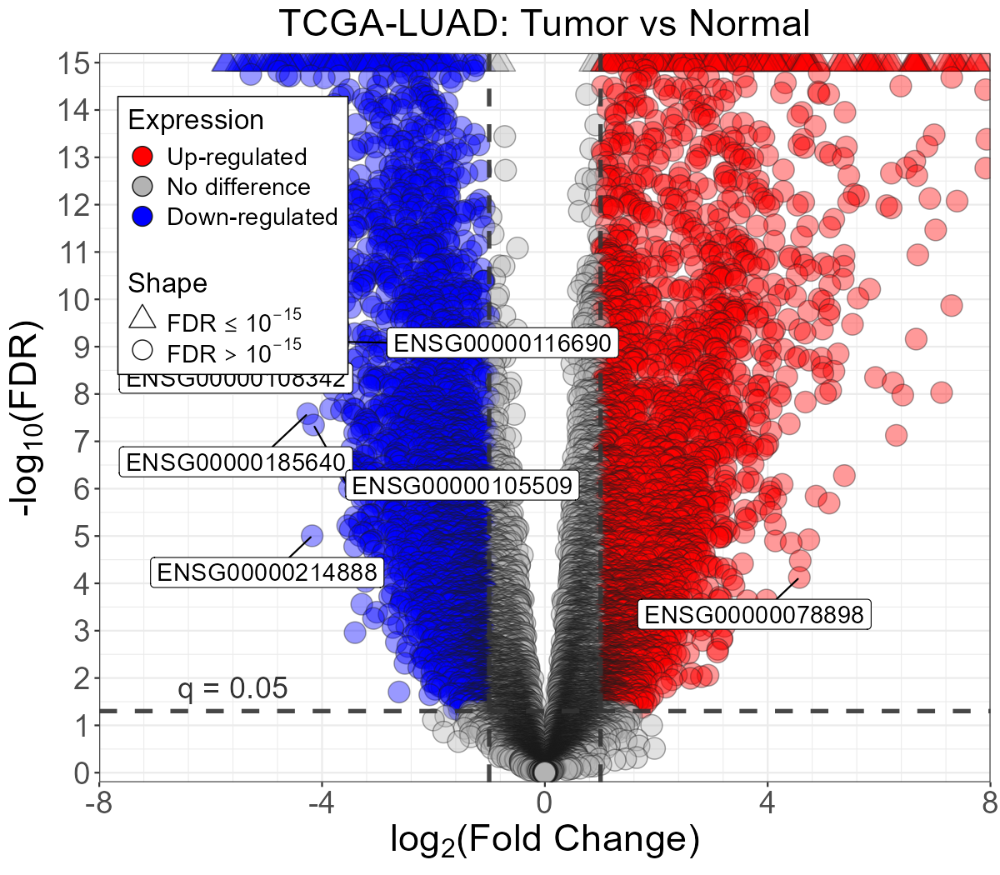
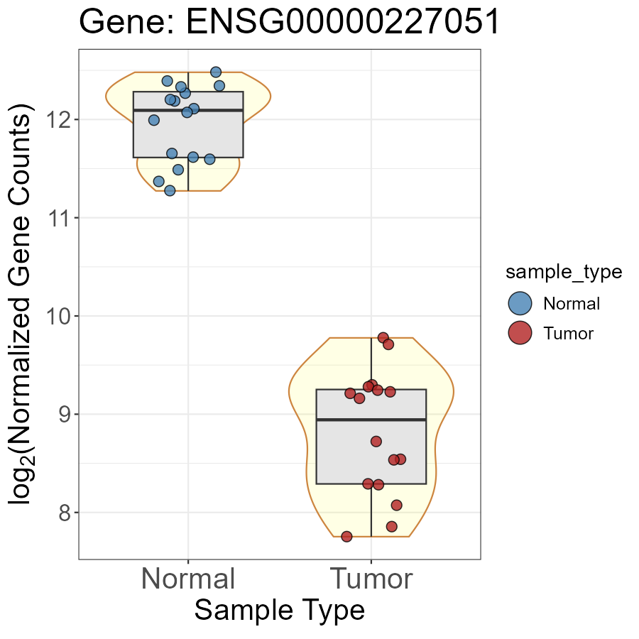

Differential Expression Analysis Workflow with OmicsKit
DEA_workflow.RmdOverview
This vignette demonstrates a complete RNA-seq differential expression analysis (DEA) workflow using OmicsKit, from study design through visualization, using real TCGA-LUAD data (16 tumor vs. 16 normal lung samples).
The workflow covers:
- Study design : statistical power estimation
- Quality control : unsupervised dimensionality reduction
- DEA results : annotation, normalization, and export
- Visualization : volcano plots and gene-level expression plots
- Multi-comparison : splitting genes into exclusive expression cases
Section 1 : Study design: power analysis
Before collecting data or running any analysis, it is good practice to estimate the minimum sample size needed to reliably detect differentially expressed genes at a given effect size and false discovery rate.
power_analysis() computes statistical power across a
range of sample sizes using an analytical approximation that accounts
for multiple testing:
result <- power_analysis(
effect_size = 1, # minimum log2 fold-change to detect
dispersion = 0.1, # biological coefficient of variation squared
n_genes = 20000, # total genes tested
prop_de = 0.05, # expected proportion of DE genes
alpha = 0.05, # desired FDR
power_target = 0.8, # desired power (80%)
max_n = 30,
plot = TRUE
)
# Minimum samples per group needed
result$min_sample_size
#> [1] 7
# Full power curve
head(result$power_table)
#> SampleSize Power
#> 1 2 0.06234486
#> 2 3 0.20477735
#> 3 4 0.41078547
#> 4 5 0.61880322
#> 5 6 0.78217643
#> 6 7 0.88846759
# See plot
result$plot

Statistical power vs. sample size per group. The red dashed line marks 80% power; the blue dashed line marks the minimum required sample size.
The TCGA-LUAD dataset used in this vignette has 16 samples per group, well above the minimum required for detecting log2FC ≥ 1 at 80% power.
Section 2 : Quality control: unsupervised clustering
Before running DEA, it is essential to verify that samples cluster by their biological group and to detect potential batch effects or outliers. OmicsKit provides three complementary dimensionality reduction methods that all accept the same VST-transformed count matrix.
Why VST? Variance Stabilizing Transformation removes the mean-variance dependence of RNA-seq counts, placing all genes on a comparable log2-like scale. This prevents highly expressed genes from dominating the sample-level distances.
data(vst_counts)
data(sampledata)
# nice_PCA, nice_UMAP, and nice_tSNE require a column named "id"
sampledata_dim <- sampledata
colnames(sampledata_dim)[colnames(sampledata_dim) == "patient_id"] <- "id"
dim(vst_counts)
#> [1] 21330 32
table(sampledata$sample_type)
#>
#> normal tumor
#> 16 16PCA
PCA is the fastest method and should always be the first step. The first two principal components often capture the main sources of variation.
nice_PCA(
object = vst_counts,
annotations = sampledata_dim,
variables = c(fill = "sample_type"),
legend_names = c(fill = "Sample Type"),
colors = c("steelblue", "firebrick"),
shapes = c(21, 21),
title = "TCGA-LUAD PCA: Tumor vs Normal"
)
PCA of VST-transformed TCGA-LUAD counts. Tumor (red) and normal (blue) samples separate cleanly along PC1.
UMAP
UMAP captures non-linear structure and is particularly useful for larger datasets or when PCA does not show clear separation.
nice_UMAP(
object = vst_counts,
annotations = sampledata_dim,
variables = c(fill = "sample_type"),
legend_names = c(fill = "Sample Type"),
colors = c("steelblue", "firebrick"),
shapes = c(21, 21),
title = "TCGA-LUAD UMAP: Tumor vs Normal",
neighbors = 5,
epochs = 1000,
seed = 174
)
UMAP of VST-transformed TCGA-LUAD counts.
tSNE
tSNE is useful for visualizing tight local clusters. Note that
perplexity must be less than one-third of the number of
samples.
# With 32 samples, perplexity must be < 10
nice_tSNE(
object = vst_counts,
annotations = sampledata_dim,
perplexity = 5,
max_iterations = 1000,
variables = c(fill = "sample_type"),
legend_names = c(fill = "Sample Type"),
colors = c("steelblue", "firebrick"),
shapes = c(21, 21),
title = "TCGA-LUAD tSNE: Tumor vs Normal",
seed = 174
)
tSNE of VST-transformed TCGA-LUAD counts.
Section 3 : DEA results: annotation, normalization, and export
Once QC confirms clean group separation, we work with the DESeq2
results. The deseq2_results object is already provided as
an example dataset.
data(deseq2_results)
data(norm_counts)
# Overview
dim(deseq2_results)
#> [1] 21330 7
sum(deseq2_results$padj < 0.05, na.rm = TRUE)
#> [1] 10910Gene annotations
get_annotations() queries Ensembl via biomaRt to
retrieve gene symbols, biotype, chromosomal location, and length.
Requires an internet connection.
annotations <- get_annotations(
ensembl_ids = deseq2_results$gene_id,
mode = "genes",
version = "Current",
filename = "luad_gene_annotations",
format = "csv"
)
head(annotations)Adding annotations to results and counts
add_annotations() joins annotation columns to any matrix
or data frame using Ensembl IDs as the key:
# Add gene symbol and biotype to normalized counts
norm_counts_annot <- add_annotations(
object = norm_counts,
reference = annotations,
variables = c("symbol", "biotype")
)
head(norm_counts_annot[, c("geneID", "symbol", "biotype")])TPM normalization
While DESeq2 normalized counts are appropriate for DEA, TPM is useful
for comparing expression levels between genes within a sample. Note that
TPM requires accurate gene lengths, get_annotations()
provides these via $gene_length (computed as
end - start + 1).
Saving results
save_results() exports three Excel files: all genes,
over-expressed only, and under-expressed only:
save_results(
df = deseq2_results,
name = "TCGA_LUAD_TumorVsNormal",
l2fc = 1,
cutoff_alpha = 0.05
)
# Creates:
# TCGA_LUAD_TumorVsNormal_full.xlsx
# TCGA_LUAD_TumorVsNormal_up_log2FC>1_FDR<0.05.xlsx
# TCGA_LUAD_TumorVsNormal_down_log2FC<1_FDR<0.05.xlsxSection 4 : Visualization
Volcano plot
The volcano plot is the standard way to visualize DEA results, showing the relationship between effect size (log2FC) and significance (FDR).
Tip: To display gene symbols instead of Ensembl IDs, run
get_annotations()and join thesymbolcolumn todeseq2_resultswithadd_annotations()before callingnice_Volcano().
nice_Volcano(
results = deseq2_results,
x_var = "log2FoldChange",
y_var = "padj",
label_var = "gene_id",
title = "TCGA-LUAD: Tumor vs Normal",
cutoff_y = 0.05,
cutoff_x = 1,
x_range = 8,
y_max = 10
)
Volcano plot of TCGA-LUAD DEA results. Red: upregulated in tumor; blue: downregulated; grey: not significant.
Detectable genes
detect_filter() identifies genes with reliable
expression levels by applying thresholds on baseMean and mean normalized
counts per group.
# detect_filter requires a column named "ensembl"
res <- deseq2_results
colnames(res)[colnames(res) == "gene_id"] <- "ensembl"
rownames(res) <- res$ensembl
samples_normal <- sampledata$patient_id[sampledata$sample_type == "normal"]
samples_tumor <- sampledata$patient_id[sampledata$sample_type == "tumor"]
detected <- detect_filter(
norm.counts = as.data.frame(norm_counts),
df.BvsA = res,
samples.baseline = samples_normal,
samples.condition1 = samples_tumor,
cutoffs = c(50, 50, 0)
)
length(detected$DetectGenes)Significance stars
get_stars() converts FDR values to asterisk notation for
annotation in plots:
data(deseq2_results)
res_stars <- deseq2_results
colnames(res_stars)[colnames(res_stars) == "gene_id"] <- "ensembl"
# Most significant gene
get_stars(
geneID = res_stars$ensembl[1],
object = res_stars
)
#> [1] "****"
# Least significant gene
get_stars(
geneID = res_stars$ensembl[nrow(res_stars)],
object = res_stars
)
#> [1] "ns"Gene-level expression: Violin-Scatter-Box plot
nice_VSB() shows the distribution of normalized
expression for a single gene across sample groups. The input is the
normalized counts matrix.
top_gene <- deseq2_results$gene_id[1]
# Get symbol
#symbol <- deseq2_results$symbol[1]
nice_VSB(
object = norm_counts,
annotations = sampledata,
variables = c(fill = "sample_type"),
genename = top_gene,
categories = c("normal", "tumor"),
labels = c("Normal", "Tumor"),
colors = c("steelblue", "firebrick"),
shapes = 21,
markersize = 3
)Note: alternative using a DESeq2 object directly: If you still have your
DESeqDataSetobject in your session, you can usenice_VSB_DESeq2()instead. It extracts the normalized counts internally viaDESeq2::counts(dds, normalized = TRUE), so you do not need to provide a separatenorm_countsmatrix:nice_VSB_DESeq2( object = dds, variables = c(fill = "sample_type"), genename = top_gene, symbol = "TP53", # optional: displayed in plot title categories = c("normal", "tumor"), labels = c("Normal", "Tumor"), colors = c("steelblue", "firebrick"), shapes = 21, markersize = 3 )Use
nice_VSB()when working from a pre-computed normalized counts matrix, andnice_VSB_DESeq2()when the DESeq2 object is still available in your environment.

Violin-Scatter-Box plot of the most significant DEG across tumor and normal samples.
Section 5 : Multi-comparison analysis (optional)
When a study includes three phenotypes (e.g., normal, primary tumor,
metastasis), split_cases() classifies genes into 10
mutually exclusive expression patterns based on significance and
direction across all three pairwise comparisons.
# Requires three DESeq2 result data frames:
# df.BvsA : condition 1 vs baseline
# df.CvsA : condition 2 vs baseline
# df.BvsC : condition 1 vs condition 2
cases <- split_cases(
df.BvsA = df_tumor_vs_normal,
df.CvsA = df_meta_vs_normal,
df.BvsC = df_tumor_vs_meta,
unique_id = "ensembl",
significance_var = "padj",
significance_cutoff = 0.05,
change_var = "log2FoldChange",
change_cutoff = 1
)
# Number of genes per case
sapply(cases, nrow)
# Case 1: ladder genes : progressive up or down across all comparisons
head(cases$Case1)Full workflow - summary
library(OmicsKit)
# 1. Study design
power_analysis(effect_size = 1, dispersion = 0.1, n_genes = 20000)
# 2. QC: dimensionality reduction (use VST counts)
data(vst_counts); data(sampledata)
sampledata$id <- sampledata$patient_id
nice_PCA(vst_counts, sampledata, variables = c(fill = "sample_type"),
legend_names = c(fill = "Sample Type"),
colors = c("steelblue", "firebrick"), shapes = c(21, 21))
# 3. Annotate and export results
annotations <- get_annotations(deseq2_results$gene_id)
norm_counts_annot <- add_annotations(norm_counts, annotations)
save_results(deseq2_results, name = "TumorVsNormal", l2fc = 1)
# 4. Visualize and filter non-detectable genes
nice_Volcano(deseq2_results, x_var = "log2FoldChange",
y_var = "padj", label_var = "gene_id",
title = "Tumor vs Normal")
detected <- detect_filter(as.data.frame(norm_counts), deseq2_results,
samples.baseline = samples_normal,
samples.condition1 = samples_tumor)
nice_VSB(norm_counts, sampledata,
variables = c(fill = "sample_type"),
genename = detected$DetectGenes[1],
categories = c("normal", "tumor"),
labels = c("Normal", "Tumor"),
colors = c("steelblue", "firebrick"))
# 5. Multi-comparison (if 3 phenotypes)
cases <- split_cases(df.BvsA, df.CvsA, df.BvsC)Session info
sessionInfo()
#> R version 4.4.2 (2024-10-31 ucrt)
#> Platform: x86_64-w64-mingw32/x64
#> Running under: Windows 11 x64 (build 26200)
#>
#> Matrix products: default
#>
#>
#> locale:
#> [1] LC_COLLATE=English_United States.utf8
#> [2] LC_CTYPE=English_United States.utf8
#> [3] LC_MONETARY=English_United States.utf8
#> [4] LC_NUMERIC=C
#> [5] LC_TIME=English_United States.utf8
#>
#> time zone: America/Bogota
#> tzcode source: internal
#>
#> attached base packages:
#> [1] stats graphics grDevices utils datasets methods base
#>
#> other attached packages:
#> [1] ggplot2_4.0.2 OmicsKit_1.0.0.0000
#>
#> loaded via a namespace (and not attached):
#> [1] gtable_0.3.6 jsonlite_2.0.0 dplyr_1.2.0 compiler_4.4.2
#> [5] tidyselect_1.2.1 jquerylib_0.1.4 png_0.1-8 systemfonts_1.3.2
#> [9] scales_1.4.0 textshaping_1.0.5 yaml_2.3.12 fastmap_1.2.0
#> [13] R6_2.6.1 labeling_0.4.3 patchwork_1.3.2 generics_0.1.4
#> [17] knitr_1.51 htmlwidgets_1.6.4 tibble_3.3.1 desc_1.4.3
#> [21] bslib_0.10.0 pillar_1.11.1 RColorBrewer_1.1-3 rlang_1.1.7
#> [25] cachem_1.1.0 xfun_0.54 fs_1.6.7 sass_0.4.10
#> [29] S7_0.2.1 otel_0.2.0 cli_3.6.5 withr_3.0.2
#> [33] pkgdown_2.2.0 magrittr_2.0.4 digest_0.6.39 grid_4.4.2
#> [37] rstudioapi_0.18.0 lifecycle_1.0.5 vctrs_0.7.1 evaluate_1.0.5
#> [41] glue_1.8.0 farver_2.1.2 ragg_1.5.1 rmarkdown_2.30
#> [45] tools_4.4.2 pkgconfig_2.0.3 htmltools_0.5.9